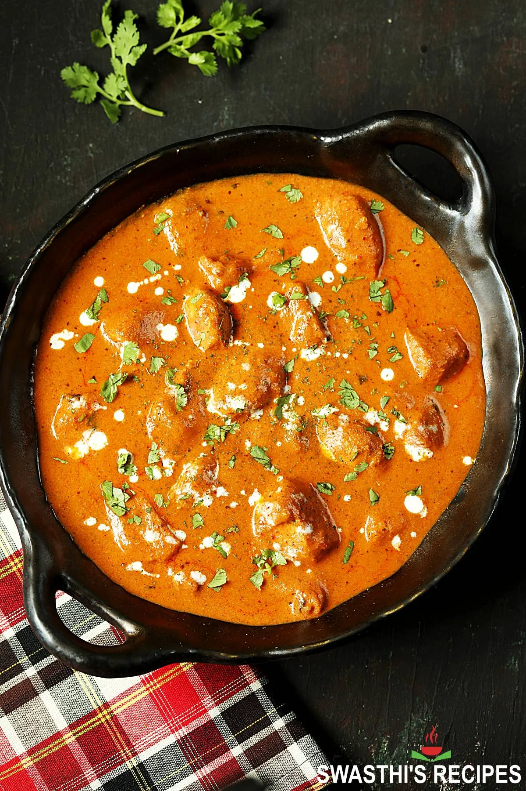

Butter Chicken

Description
This is an authentic Indian recipe for butter chicken (aka Indian chicken makhani) from
Swasthi's Recipes.
It consists of juicy, grilled chicken simmered in a creamy tomato curry. The secret to the perfectly cooked chicken is the spiced yogurt marinade
which tenderizes the chicken while flavoring it. The sauce is silkly and aromatic. Look no further for your next meal. It will taste
just like it's from your favorite Indian restaurant.
Ingredients
Chicken Marinade
- 1/2 kg (1.1 lbs) boneless chicken
- 1/2 to 3/4 teaspoon Kashmiri red chili powder
- 1/4 to 1/3 teaspoon salt
- 3/4 to 1 tablespoon lemon juice
- 1/3 cup Greek yogurt
- 3/4 to 1 tablespoon oil
- 3/4 tablespoon ginger garlic paste (or 1/2 tablespoon fine grated ginger + 1/2 tablespoon fine grated garlic)
- 1/8 teaspoon tumeric
- 3/4 to 1 teaspoon garam marsala
- 1 teaspoon cumin powder
- 1 teaspoon coriander powder
- 1 teaspoon kasuri methi
Sauce
- 1 and 1/2 cups onions sliced
- 2 to 3 tablespoons butter or ghee
- 600 grams (1.3 lbs) fresh ripe tomatoes
- 1/3 cup whole raw cashews (soaked in hot water)
- 1/2 cup water to blend
- 2 inch cinnamon stick
- 2 to 4 green cardamoms
- 2 to 4 cloves
- 3/4 tablespoon ginger garlic paste (or 1/2 tablespoon fine grated ginger + 1/2 tablespoon fine grated garlic)
- 1 to 2 green chilies
- 1 to 2 teaspoons Kashmiri chili powder
- 1 to 1 and 1/2 teaspoon garam masala
- 1 to 1 and 1/2 teaspoon coriander powder
- 1/2 teaspoon cumin powder
- 1 and 1/2 cups hot water
- 1/2 to 3/4 teaspoon salt
- 1 teaspoon sugar
- 1/2 tablepoon kasuri methi
- 1/3 cup heavy cream
- 2 tablespoons coriander leaves to garnish
Steps
Marinate Chicken
- Marinate chicken with lemon juice, chili powder, and salt.
- Cover and rest for 20 minutes.
- Add yogurt, oil, ginger garlic paste, tumeric, garam masala powder, cumin powder, coriander powder, and kasuri methi.
- Cover and refrigerate to marinate and rest for a minimum of 30 minutes, or overnight for best results.
Make Sauce
- Remove chicken from the refrigerator to bring it close to room temperature.
- Saute onions in 1 tablespoon of butter until lightly golden (about 7 minutes).
- To a blender, add tomatoes, sauteed onions, cashews, and water and blend into a smooth puree.
- Melt butter in a pan and add all the whole spices (cinnamon, cloves, cardamoms).
- When they begin to sizzle, stir in the ginger garlic paste and green chilies.
- Fry on a low heat, for 1-2 minutes until it turns fragrant but not burnt.
- Turn off the heat and stir in red chili powder, garam masala, cumin, and coriander powder.
- Stir in the onion, tomato, cashew puree. If it is not smooth, strain it into the pan.
- Mix well and cover partially.
- Bring to a boil on medium high heat, then reduce the heat to low or medium and cook until the puree turns thick, stirring occasionally.
- Pour in hot water and simmer for 10 minutes until the sauce thickens and traces of fat are visible on top of the sauce.
- Remove the whole spices and discard.
Grill Chicken
- Spread 1 tablespoon of butter in a pan and heat it well.
- Place the marinated chicken pieces into the pan, spacing them out a little.
- Fry on medium heat for 2 minutes, turning the pieces. Cook until the chicken is just cooked and the the marinade dries up.
It is not necessary to fully cook the chicken at this stage
- Cook the chicken in batches, depending on the size of your pan.
Assemble the Dish
- Add chicken to the sauce and pour hot water (about 1/2 cup) if the sauce is too thick.
- Cover and simmer for about 5 to 7 minutes until the chicken becomes tender.
- Stil in salt, sugar, and kasuri methi. Taste test and optionally add more garam masala and another tablespoon of butter.
- Turn off heat and stir in heavy cream.
- Garnish with chopped coriander leaves and some cream.
- Serve with tumeric rice, steamed basmati rice, butter naan, or cumin rice.
Home